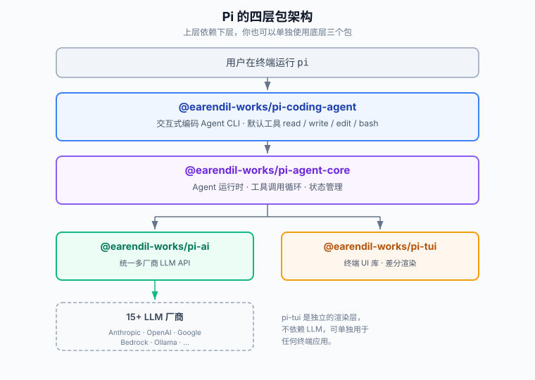

Pi Coding Agent 入門チュートリアル
Pi はターミナルで動作する AI コーディングエージェントで、Claude Code や OpenAI Codex CLI のようなツールです。
Pi の公式の理念は次のとおりです："There are many agent harnesses but this one is yours"（Agent ツールは数多くあるが、これはあなた自身のものだ）。
あなたが Pi に一言指示を出すと、Pi はプロジェクトディレクトリ内でファイルを読み書きし、コマンドを実行し、タスクが完了するまで LLM を繰り返し呼び出します。
核心理念は、最小限のカーネルと極めて高い拡張性によって、ツールを自分に合う形に作り変えられるようにすることで、逆にツールに合わせるのではありません。
Pi Agent 完全チュートリアル：https://www.runoob.com/pi-agent/pi-agent-tutorial.html

Pi に含まれるもの
Pi は単一のプログラムではなく、4つの npm パッケージからなるツールチェーンです。
通常のユーザーは最上位のパッケージをインストールするだけで@earendil-works/pi-coding-agent、すぐに使えるコマンドライン Agent が得られます。
どんな人に向いているか
Pi は特に以下のシーンと人々に適しています：
- ターミナルでのワークフローを好み、IDE とコマンドラインを行き来したくない開発者
- 深くカスタマイズでき、Agent 自身に自分のツールを書き換えさせることまでできる上級ユーザー
- 複数の LLM（Anthropic、OpenAI、Google など）を同時に利用する必要がある人
- Agent の能力を自分のプログラムに組み込みたい開発者（SDK または RPC モード経由）
注意：Pi はデフォルトであなたのユーザー権限で動作し、組み込みのサンドボックスはありません。信頼できないコードリポジトリで使用する前に、この記事の「安全上の注意」の章を先に読んでください。
コア設計哲学：機能ではなくプリミティブ
Pi の設計哲学を理解すれば、なぜ他の Agent なら備えている多くの機能を意図的に「組み込まない」のかが分かるでしょう。
Pi はこの理念を次のように呼んでいますPrimitives, Not Features（機能ではなくプリミティブを提供する）。
あえて組み込まない機能
次の機能は Pi には組み込まれておらず、必要に応じて拡張機能や外部ツールで実現します：
| 組み込まれていない機能 | Pi での代替手段 |
|---|---|
| MCP プロトコル統合 | ツールを README 付きの CLI として書くか、MCP 拡張機能をインストールする |
| サブエージェント（subagents） | tmux で複数のセッションを開くか、自分で拡張機能を書く |
| 権限確認のポップアップ | コンテナ内で実行するか、自分で確認フローの拡張機能を書く |
| プランモード（plan mode） | 計画をファイルに書くか、拡張機能を書く |
| 組み込みの TODO リスト | TODO.md ファイルを使うか、拡張機能をインストールする |
| バックグラウンド bash | tmux を使って完全な可観測性を得る |
なぜそうするのか
Pi は、これらの機能はチームによって必要とするものが大きく異なり、無理に組み込むとツールが肥大化し、実際のワークフローに合わせにくくなると考えています。
そこで Pi のやり方は、クリーンな最小カーネルを維持し、すべての「機能」を、インストール可能・作成可能・共有可能な拡張機能、スキル、プロンプトテンプレート、テーマにすることです。
さらに、Pi にこれらの機能を直接書いてもらうこともでき、書き終わったら/reloadリロードすれば、すぐに使えます。
この言葉は覚えておく価値があります：Adapt Pi to your workflows, not the other way around（Pi をあなたのワークフローに合わせるのであって、あなたが Pi に合わせるのではない）。
アーキテクチャとコアパッケージ
Pi は、階層が明確な4つのパッケージで構成され、上位層が下位層に依存しています。
あなたが普段使っているpiコマンドは、最上位のパッケージが提供するエントリーポイントにすぎません。

4つのコアパッケージ
| パッケージ名 | 役割 | 単体で使う場合 |
|---|---|---|
@earendil-works/pi-coding-agent | 対話型コーディング Agent CLI。ユーザーが直接インストールして使うエントリーポイント | ほとんどの場合、これだけで十分 |
@earendil-works/pi-agent-core | Agent ランタイム。ツール呼び出しループと状態管理を担当 | コーディング以外の Agent を自分で構築したい場合 |
@earendil-works/pi-ai | 統一されたマルチベンダー LLM API（OpenAI、Anthropic、Google など） | 統一インターフェースだけで複数のモデルを呼び出したい場合 |
@earendil-works/pi-tui | ターミナル UI ライブラリ。差分レンダリングをサポート | 自分独自のターミナルアプリを書きたい場合 |
4つの実行モード
Pi は対話的な実行だけでなく、さまざまなシーンに合わせて4つのモードを提供しています：
| モード | 説明 | 代表的なシーン |
|---|---|---|
| Interactive（対話式） | 完全なターミナル UI エクスペリエンス | 日常的なコーディング、対話形式での開発 |
| Print / JSON | pi -p "提问"一度きりの出力；--mode jsonイベントストリームの出力； | スクリプト自動化、パイプライン処理 |
| RPC | stdin/stdout を介した JSON プロトコル通信 | 非 Node プログラムとの統合 |
| SDK | ライブラリとしてあなたのアプリケーションに組み込む | 自社製品に Agent 能力を統合する |
インストール
Pi は macOS、Linux、Windows をカバーする複数のインストール方法を提供しています。
最も一般的なのは npm によるグローバルインストールで、公式のワンクリックスクリプトも利用できます。
方法1：ワンクリックスクリプト（初心者におすすめ）
macOS と Linux のユーザーは curl を使用：
curl -fsSL https://pi.dev/install.sh | sh
Windows ユーザーは PowerShell を使用：
powershell -c "irm https://pi.dev/install.ps1 | iex"
方法2：npm グローバルインストール
Node.js をすでにインストールしているなら、パッケージマネージャーでグローバルインストールするだけです。
注意してほしいのは、あの--ignore-scriptsパラメータ：これは依存関係のインストール時のライフサイクルスクリプトをスキップします。Pi の通常使用にはこれらのスクリプトは不要で、これを付けるとより安全です。
# npm 安装 npm install -g --ignore-scripts @earendil-works/pi-coding-agent # pnpm 安装 pnpm add -g --ignore-scripts @earendil-works/pi-coding-agent # bun 安装 bun add -g --ignore-scripts @earendil-works/pi-coding-agent
インストールの確認
インストール完了後、バージョン番号を確認して成功したかどうかを確認します：
pi --version
例：
$ pi --version 0.80.6
アンインストール
アンインストール方法は、当初どの方法でインストールしたかによって異なります：
# curl 装的或 npm 装的 npm uninstall -g @earendil-works/pi-coding-agent # pnpm 装的 pnpm remove -g @earendil-works/pi-coding-agent # bun 装的 bun uninstall -g @earendil-works/pi-coding-agent
注意：Pi をアンインストールしても設定は削除されません。設定、認証情報、セッション履歴、インストール済みの Pi パッケージはすべて
~/.pi/agent/ディレクトリに保持されるため、手動でクリーンアップする必要があります。
モデル Provider の設定
Pi 自体には大規模言語モデルは含まれておらず、少なくとも1つのモデルプロバイダー（Provider）のアクセス認証情報を提供する必要があります。
設定方法は2つあります：サブスクリプションログイン、または API Key。
方法1：サブスクリプションでログイン（最も手間いらず）
すでに Claude Pro/Max、ChatGPT Plus/Pro、または GitHub Copilot のサブスクリプションを持っている場合は、そのままログインして再利用できます。
Pi を起動したら/loginを実行し、プロバイダーを選択するだけです：
# 启动 pi pi # 在 pi 里执行登录命令 /login
選択可能なサブスクリプションプロバイダーは3つあります：
| プロバイダー | 要件 | 説明 |
|---|---|---|
| Claude Pro / Max | Anthropic サブスクリプション | サードパーティツールの使用量は Token 単位で課金され、サブスクリプション枠は消費しません |
| ChatGPT Plus / Pro（Codex） | OpenAI サブスクリプション | OpenAI 公式が Codex for OSS を通じて承認 |
| GitHub Copilot | Copilot サブスクリプション | モデルがサポートされていないと表示された場合は、VS Code で先に対応するモデルを有効にする必要があります |
ログイン後、認証情報は~/.pi/agent/auth.jsonに保存され、期限切れになると自動的に更新されます。ログアウトするには/logout。
方法2：APIキー（最も柔軟）
環境変数で API Key を渡すのが最も一般的な方法です。例：Anthropic の Key を使う場合：
# 设置环境变量后启动 export ANTHROPIC_API_KEY=sk-ant-... pi
Pi 内で/loginを実行して API Key タイプのプロバイダーを選択し、Key をauth.json。
一般的なプロバイダーの環境変数
Pi は15以上のプロバイダーをサポートしています。以下は最も一般的なものです：
| プロバイダー | 環境変数 | auth.json 内のキー名 |
|---|---|---|
| Anthropic | ANTHROPIC_API_KEY | anthropic |
| OpenAI | OPENAI_API_KEY | openai |
| Google Gemini | GEMINI_API_KEY | |
| DeepSeek | DEEPSEEK_API_KEY | deepseek |
| Groq | GROQ_API_KEY | groq |
| Mistral | MISTRAL_API_KEY | mistral |
| xAI | XAI_API_KEY | xai |
| OpenRouter | OPENROUTER_API_KEY | openrouter |
| Hugging Face | HF_TOKEN | huggingface |
ヒント：
auth.json内の認証情報は環境変数よりも優先されます。両方に設定されている場合は、auth.jsonが優先されます。
auth.json の構造
認証情報を手動で管理したい場合は、~/.pi/agent/auth.jsonを直接編集できます。このファイルは作成時に 0600 権限（現在のユーザーのみ読み書き可能）に設定されます：
{
"anthropic": { "type": "api_key", "key": "sk-ant-..." },
"openai": { "type": "api_key", "key": "sk-..." },
"google": { "type": "api_key", "key": "..." }
}
Key フィールドは、パスワードマネージャーや環境変数から値を取得するのに便利な3つの高度な書き方をサポートしています：
| 書き方 | 意味 | 例 |
|---|---|---|
"!命令" | 感嘆符で始まり、そのコマンドを実行して stdout を Key として取得 | "!op read 'op://vault/item/cred'" |
"$变量名" | 環境変数の値を取得 | "$MY_ANTHROPIC_KEY" |
| 純粋なリテラル | そのまま Key として使用 | "sk-ant-..." |
クラウドプラットフォームプロバイダー
クラウド上のモデルサービスを使用している場合、Pi は Azure OpenAI、Amazon Bedrock、Google Vertex AI、Cloudflare などもサポートしています。
これらは通常、エンドポイント、リージョン、またはデプロイメント名の追加設定が必要です。Azure OpenAI を例にすると：
# Azure OpenAI 所需的环境变量 export AZURE_OPENAI_API_KEY=... export AZURE_OPENAI_BASE_URL=https://your-resource.ai.azure.com # 可选：API 版本与部署名映射 export AZURE_OPENAI_API_VERSION=2024-02-01 export AZURE_OPENAI_DEPLOYMENT_NAME_MAP=gpt-4o=my-gpt4o
DeepSeek プロバイダーの設定
Pi は models.json を通じてカスタムプロバイダーをサポートしています。設定ファイルの場所：
- Linux / macOS：~/.pi/agent/models.json
- Windows：%USERPROFILE%\.pi\agent\models.json
まず DeepSeek オープンプラットフォームで API Key を取得します：https://platform.deepseek.com/api_keys。
{
"providers": {
"deepseek": {
"baseUrl": "https://api.deepseek.com",
"api": "openai-completions",
"apiKey": "$DEEPSEEK_API_KEY",
"models": [
{
"id": "deepseek-v4-pro",
"name": "DeepSeek V4 Pro",
"contextWindow": 1000000,
"maxTokens": 384000,
"input": ["text"],
"reasoning": true,
"cost": {
"input": 1.74,
"output": 3.48,
"cacheRead": 0.145,
"cacheWrite": 0
},
"compat": {
"requiresReasoningContentOnAssistantMessages": true,
"thinkingFormat": "deepseek",
"reasoningEffortMap": {
"minimal": "high",
"low": "high",
"medium": "high",
"high": "high",
"xhigh": "max"
}
}
},
{
"id": "deepseek-v4-flash",
"name": "DeepSeek V4 Flash",
"contextWindow": 1000000,
"maxTokens": 384000,
"input": ["text"],
"reasoning": true,
"cost": {
"input": 0.14,
"output": 0.28,
"cacheRead": 0.028,
"cacheWrite": 0
},
"compat": {
"requiresReasoningContentOnAssistantMessages": true,
"thinkingFormat": "deepseek",
"reasoningEffortMap": {
"minimal": "high",
"low": "high",
"medium": "high",
"high": "high",
"xhigh": "max"
}
}
}
]
}
}
}
環境変数を設定します：
Linux / Mac ユーザー：
export DEEPSEEK_API_KEY="<你的 DeepSeek API Key>"
Windows ユーザー：
$env:DEEPSEEK_API_KEY="<你的 DeepSeek API Key>"
プロジェクトディレクトリに入り、pi コマンドを実行します：
cd /path/to/my-project pi
入力/modelモデルスイッチャーを開き、deepseek を選択してから DeepSeek-V4-Pro または DeepSeek-V4-Flash を選択します。
その他の設定オプションは次を参照してください：https://github.com/earendil-works/pi/blob/main/packages/coding-agent/docs/models.md。
クレデンシャルの解析順序
Pi がプロバイダーの認証情報を必要とする場合、次の順序で検索し、見つかったものを使用します：
| 優先度 | ソース |
|---|---|
| 1（最高） | コマンドライン--api-keyパラメータ |
| 2 | auth.json内のエントリ（API Key または OAuth トークン） |
| 3 | 環境変数 |
| 4 | models.json内のカスタムプロバイダーの Key |
初回実行
認証情報を設定したら、プロジェクトディレクトリに入り、piを直接実行して起動します。
# 进入项目目录 cd /path/to/project # 启动 pi pi
起動後、一文を入力して Enter を押すだけです。例えば、このリポジトリを分析させます：
Summarize this repository and tell me how to run its checks.
Pi は自動的にファイルを読み取り、コマンドを実行し、要約と確認方法を提示します。
プロジェクト信頼プロンプト
現在のディレクトリまたは親ディレクトリに.pi設定、拡張機能、スキルなどのプロジェクトレベルのリソースがある場合、Pi はインタラクティブ起動時にこのプロジェクトを信頼するかどうかを先に尋ねます。
これは、リポジトリがあなたの知らないうちに拡張機能を静かにロードしたり、設定を変更したりするのを防ぐためです。
注意：信頼の決定は
~/.pi/agent/trust.jsonに保存されます。非インタラクティブモード（-p、--mode json）ではダイアログは表示されず、デフォルトでグローバル設定のdefaultProjectTrustに従って処理されます。
Agent はどのように動作するのか
メッセージを送信するたびに、Pi は agent ループを開始します。このループを理解すれば、Pi の動作方式を理解したことになります。

中心となるのは中間の turn ループです：モデルは各ラウンドでツールを呼び出す可能性があり、Pi がツールを実行して結果をコンテキストに戻し、モデルがツールの呼び出しをやめて最終的な返信を返すまで続けます。
4つの組み込みツール
Pi はデフォルトでモデルに4つのツールだけを提供し、コーディングに最も重要な読み書きと実行の能力をカバーしています。
| ツール | 機能 | デフォルトで有効か |
|---|---|---|
read | ファイル内容の読み取り | 是 |
write | ファイルの作成または上書き | 是 |
edit | ファイルへの部分パッチ変更 | 是 |
bash | shell コマンドの実行 | 是 |
grep | ファイル内容の検索 | いいえ（ツールオプションで有効化が必要） |
find | 条件によるファイル検索 | いいえ（ツールオプションで有効化が必要） |
ls | ディレクトリ内容の一覧表示 | いいえ（ツールオプションで有効化が必要） |
利用可能なツールの制御
コマンドライン引数でモデルが使用できるツールを正確に制御できます。
これは Agent の能力を制限する必要がある場合に便利です。例えば、コードのレビューだけさせて変更はさせない場合：
# 只读模式：只允许读取和搜索类工具 pi --tools read,grep,find,ls -p "审查这段代码" # 禁用某个工具，其余保留 pi --exclude-tools ask_question # 关闭所有内置工具，只保留扩展提供的工具 pi --no-builtin-tools -e ./my-extension.ts # 完全禁用工具，纯对话 pi --no-tools -p "解释一下这个概念"
注意：Pi は現在の作業ディレクトリ内で実行され、ファイルを変更できます。git などのバージョン管理と併用して、いつでもロールバックできるようにすることをお勧めします。
AGENTS.md でプロジェクトに指示を与える
AGENTS.md は Pi のプロジェクト指示ファイルであり、モデルにこのプロジェクトのルール、実行方法、注意点を伝えます。
これは Claude Code の CLAUDE.md と似た役割を持ちます。さらに Pi は両方のファイル名をサポートしています。
AGENTS.md を書く
プロジェクトルートディレクトリにAGENTS.mdを作成し、モデルに守らせたいルールを書きます：
# 项目指令 - 改完代码后运行 `npm run check`。 - 不要在本地跑生产环境的数据库迁移。 - 回答尽量简洁。
Pi はどこから指示を読み込むのか
Pi は起動時に複数の場所から指示ファイルを読み込みます。範囲の大きい順に：
| 場所 | 適用範囲 | 説明 |
|---|---|---|
~/.pi/agent/AGENTS.md | グローバル | すべてのプロジェクトに有効な共通指示 |
親ディレクトリのAGENTS.md | プロジェクトレベル | 現在のディレクトリから上へ階層的に検索 |
現在のディレクトリのAGENTS.md | プロジェクトレベル | 最も具体的で優先度が最も高い指示 |
ファイル名はAGENTS.md 或 CLAUDE.mdどちらでもよく、Pi は両方認識します。
システムプロンプトの変更
AGENTS.md はデフォルトのシステムプロンプトに追加で付与される指示です。より徹底的に制御したい場合は、システムプロンプト全体を置き換えることができます。
プロジェクト内に.pi/SYSTEM.mdを置くとデフォルトのシステムプロンプトが置き換わります。.pi/APPEND_SYSTEM.mdを置くと追記になります（グローバルでは~/.pi/agent/配下の同名ファイルに対応します）。
注意：指示ファイルを変更したら、Pi 内で
/reloadを実行してリロードするか、Pi を再起動しないと、新しい指示は有効になりません。
対話モードのよく使う操作
インタラクティブモードは Pi で最も一般的な形態であり、いくつかの重要な操作を覚えれば効率的に使用できます。
ファイルを引用：@
エディタで@を入力すると、プロジェクトファイルのあいまい検索が表示され、選択するとファイル内容がコンテキストとしてモデルに送信されます。
コマンドライン起動時に直接ファイルを指定することもできます：
# 启动时带上一个文件 pi @README.md "总结一下这个文件" # 带上多个文件一起审查 pi @src/app.ts @src/app.test.ts "一起审查这两个文件"
shell コマンドを実行：!
エディタで!から始まるコマンドを入力すると、直接実行され、出力がモデルに送信されます：
# 运行命令，输出会进入模型上下文 !npm run lint # 两个感叹号：运行但不把输出加进模型上下文 !!npm run build
モデルと思考強度を切り替える
Pi は途中でモデルと思考強度を切り替えることをサポートし、異なるタスクの複雑さに適応します。
| 操作 | ショートカット / コマンド | 説明 |
|---|---|---|
| モデルセレクターを開く | /modelまたは Ctrl+L | 利用可能なすべてのモデルから1つ選ぶ |
| 思考強度を切り替え | Shift+Tab | off / minimal / low / medium / high / xhigh / max の間で循環 |
| お気に入りモデルを循環 | Ctrl+P / Shift+Ctrl+P | あらかじめ選んでおいた複数のモデル間で素早く切り替え |
起動時にモデルと思考強度を直接指定することもできます：
# 指定厂商和模型 pi --provider openai --model gpt-4o "帮我重构" # 用 厂商/模型 的写法 pi --model openai/gpt-4o "帮我重构" # 用 名称:思考强度 的简写 pi --model sonnet:high "解决这个复杂问题" # 限定可在 Ctrl+P 里循环的模型 pi --models "claude-*,gpt-4o"
入力と編集のテクニック
| 操作 | 方法 | 説明 |
|---|---|---|
| 複数行入力 | Shift+Enter（Windows Terminal では Ctrl+Enter） | 1つのメッセージ内で改行 |
| パス補完 | Tab | ファイルパスを補完 |
| 画像を貼り付け | Ctrl+V（Windows では Alt+V） | 画像をターミナルにドラッグすることも対応 |
| 返信をコピー | Ctrl+X | 最後のアシスタントメッセージをコピー |
| 外部エディタ | Ctrl+G | $VISUAL / $EDITOR を開いて長いテキストを編集 |
実行中に割り込む
エージェントが作業している間、じっと待つ必要はなく、いつでもメッセージを挿入できます。
| キー | 動作 | 適用シーン |
|---|---|---|
| Enter | 方向転換メッセージ：現在のツールが完了したらすぐに配信され、残りのツールを中断 | 方向がずれていることに気づいたら、すぐに修正 |
| Alt+Enter | 後続メッセージ：エージェントが完全に完了するまで待ってから配信 | 新しい要件を追加したい |
| Escape | 現在の作業を中止し、待機中のメッセージをエディタに戻す | 一旦止めて立て直したい |
ヒント：Windows Terminal では Alt+Enter はデフォルトで全画面切り替えです。方向転換と後続メッセージのキーは設定で
steeringMode和followUpMode変更できます。
よく使うスラッシュコマンド早見表
エディタで入力すると/コマンド補完が表示されます。以下は最もよく使うスラッシュコマンドです。
| コマンド | 機能 |
|---|---|
/login / /logout | OAuth または API Key の認証情報を管理 |
/model | モデルを切り替え |
/scoped-models | Ctrl+P の循環にどのモデルを含めるかを設定 |
/settings | 思考強度、テーマ、メッセージ配信方法などを調整 |
/resume | 履歴セッションから1つ選んで続行 |
/new | 新しいセッションを開始 |
/name <名称> | 現在のセッションに表示名を付ける |
/session | セッションファイル、ID、メッセージ数、トークン使用量とコストを表示 |
/tree | セッションツリーの任意のノードにジャンプして、そこから続行 |
/fork | ある履歴メッセージから新しいセッションを分岐 |
/clone | 現在のブランチを新しいセッションとしてコピー |
/compact [提示] | コンテキストを手動で圧縮。カスタム指示を付けることも可能 |
/copy | 最後のアシスタントメッセージをクリップボードにコピー |
/export [文件] | セッションを HTML または JSONL としてエクスポート |
/import <文件> | JSONL ファイルからインポートしてセッションを復元 |
/share | プライベート GitHub Gist としてアップロードし、共有可能な HTML リンクを生成 |
/reload | ショートカット、拡張機能、スキル、プロンプト、テーマ、コンテキストファイルを再読み込み |
/trust | 現在のプロジェクトの信頼決定を保存 |
/hotkeys | すべてのショートカットを表示 |
/changelog | バージョン更新履歴を表示 |
/quit | Pi を終了 |
セッション管理：ツリー構造の履歴
Pi のセッションは一直線ではなく、ツリー構造です。
つまり、任意の履歴ノードで分岐しても、元のブランチは失われず、すべてのブランチが同じセッションファイルに保存されます。
セッションはどこに保存されるのか
セッションは自動的に保存されます~/.pi/agent/sessions/、作業ディレクトリごとに分類されます。
コマンドラインから履歴セッションを復元または閲覧：
# 继续最近一次会话 pi -c # 浏览并选择一个历史会话 pi -r # 给会话起个名字，方便日后查找 pi --name "my task" # 打开指定的会话文件或 ID pi --session <path|id> # 临时会话，不保存 pi --no-session
セッションツリー内を移動する
用 /treeセッションツリービューを開いて、任意の履歴ノードにジャンプして続行できます。
ここから続行すると新しいブランチが生成され、元のブランチは変更されません。
フォークとクローン
| コマンド | 動作 | 違い |
|---|---|---|
/fork | より前のユーザーメッセージから新しいセッションを分岐 | 履歴の途中のある地点から再開 |
/clone | 現在のアクティブなブランチを新しいセッションとしてコピー | 現在の最新状態に基づいてコピーを作成 |
コンテキストの圧縮
会話が長くなり、モデルのコンテキスト上限に近づくと、Pi は自動的に古いメッセージを要約に圧縮します。
手動で/compactトリガーでき、さらに圧縮時に何を重視して残すかを伝えるカスタム指示を添えることもできます：
# 在 pi 里手动压缩，并要求保留最近改动 /compact 重点保留最近的改动和错误处理
エクスポートと共有
セッションを HTML にエクスポートして、保存や表示に便利に：
# 导出为 HTML 文件 /export my-session.html # 上传为私有 GitHub Gist，得到分享链接 /share
非対話モードと統合
Pi は対話的な会話だけでなく、コマンドラインツール、イベントストリーム、RPC サービス、SDK ライブラリとしても利用できます。
一回限りの質問：print モード
用 -pPi に回答後に終了させ、スクリプトでの呼び出しに最適：
# 直接提问 pi -p "总结一下这个代码库" # 配合管道，把内容喂给 Pi cat README.md | pi -p "总结这段文字" # 带图片提问 pi -p @screenshot.png "这张图里是什么？"
イベントストリーム：JSON モード
--mode jsonすべてのイベントを JSON Lines 形式で出力し、プログラムでの解析が容易：
# 输出 JSON 事件流 pi --mode json -p "列出 src 下所有 .ts 文件"
プロセス統合：RPC モード
--mode rpcstdin/stdout で JSON プロトコルを使用し、Node 以外のプログラム（Python、Go など）から Pi を駆動するのに適しています。
既存セッションのエクスポート
新しいセッションを開始せずに、既存のセッションファイルを直接 HTML にエクスポート：
# 把会话文件导出为 HTML pi --export session.jsonl output.html
SDK モード
自分の Node アプリケーションに Pi の機能を埋め込みたい場合は、SDK モードでライブラリとして組み込むことができます。
これは RPC よりも緊密な統合方法です。詳細は公式ドキュメントの SDK セクションを参照してください：https://pi.dev/docs/latest/sdk。
拡張機能（Extensions）
拡張機能は Pi の拡張性の中核です。これは TypeScript モジュールであり、ライフサイクルイベントの購読、カスタムツールの登録、コマンドやショートカットの追加ができます。
拡張機能は jiti を介して読み込まれるため、TypeScript を直接書くだけでよく、コンパイルは不要です。
拡張機能はどこに置くのか
| 場所 | 適用範囲 |
|---|---|
~/.pi/agent/extensions/*.ts | グローバル、すべてのプロジェクトに有効 |
.pi/extensions/*.ts | プロジェクトレベル、現在のプロジェクトのみ有効 |
サブディレクトリ形式（扩展名/index.ts）、またはpackage.jsonを含む完全なパッケージ。
最小限の拡張機能の例
次の拡張機能は3つのことを示しています：起動時の通知、危険なコマンドのインターセプト、カスタムツールとコマンドの登録です。
// 文件路径：~/.pi/agent/extensions/my-extension.ts
import type { ExtensionAPI } from "@earendil-works/pi-coding-agent";
import { Type } from "typebox";
// 扩展导出一个默认工厂函数，接收 ExtensionAPI
export default function (pi: ExtensionAPI) {
// 1. 监听 session_start 事件：会话启动时弹个通知
pi.on("session_start", async (_event, ctx) => {
ctx.ui.notify("扩展已加载！", "info");
});
// 2. 监听 tool_call 事件：拦截危险的 bash 命令
pi.on("tool_call", async (event, ctx) => {
if (event.toolName === "bash" && event.input.command?.includes("rm -rf")) {
// 弹确认框，用户拒绝就阻止执行
const ok = await ctx.ui.confirm("危险操作！", "允许执行 rm -rf 吗？");
if (!ok) return { block: true, reason: "被用户阻止" };
}
});
// 3. 注册一个自定义工具，模型可以调用它
pi.registerTool({
name: "greet",
label: "打招呼",
description: "按名字向某人打招呼",
parameters: Type.Object({
name: Type.String({ description: "要打招呼的名字" }),
}),
async execute(toolCallId, params, signal, onUpdate, ctx) {
return {
content: [{ type: "text", text: `你好，${params.name}！` }],
details: {},
};
},
});
// 4. 注册一个斜杠命令 /hello
pi.registerCommand("hello", {
description: "打个招呼",
handler: async (args, ctx) => {
ctx.ui.notify(`你好 ${args || "world"}！`, "info");
},
});
}
書いたら、-eパラメータで一時的に読み込んでテスト：
# 临时加载一个扩展来测试 pi -e ./my-extension.ts
拡張機能で何ができるのか
拡張機能の能力は上記だけにとどまらず、Pi のワークフローのほぼすべての段階に介入できます：
| 機能 | 対応するメソッド | 典型的な用途 |
|---|---|---|
| カスタムツールの登録 | pi.registerTool() | モデルにビジネスインターフェースを呼び出させる |
| コマンドの登録 | pi.registerCommand() | 独自のスラッシュコマンドを追加 |
| ショートカットの登録 | pi.registerShortcut() | カスタムショートカットをバインド |
| ツール呼び出しのインターセプト | tool_callイベント | 権限確認、コマンドの書き換え |
| コンテキストの変更 | contextイベント | 履歴のフィルタリング、RAG コンテンツの注入 |
| メッセージの注入 | pi.sendMessage() | コンテキストを動的に補足 |
| プロバイダーの登録 | pi.registerProvider() | プライベートモデルゲートウェイに接続 |
| カスタム UI | ctx.uiシリーズ | ダイアログ、ステータスバー、コンポーネント |
ヒント：Pi リポジトリには50以上のサンプル拡張機能があり、サブエージェント、プランモード、権限ゲート、SSH 実行、サンドボックスなどをカバーしています。拡張機能開発を学ぶのに最適なリファレンスです。
スキル（Skills）
スキルはもう一つの再利用可能な機能パッケージです。拡張機能との違いは、スキルが主にモデル向けの指示とスクリプトであり、必要に応じて読み込まれることです。
Pi は Agent Skills 標準を実装しているため、Claude Code、OpenAI Codex などのツールのスキルも直接使用できます。
スキルの動作方法
スキルはプログレッシブディスクロージャー（progressive disclosure）の原則を採用しています。
起動時、Pi は各スキルの名前と説明のみをシステムプロンプトに含めます。タスクが一致したとき、モデルはreadツールを使用して完全なスキル説明を読み込みます。
これにより、多くのスキルを入れても、最初からコンテキストを埋め尽くすことはありません。
スキルはどこに置くのか
| 場所 | 適用範囲 |
|---|---|
~/.pi/agent/skills/ | グローバル |
~/.agents/skills/ | グローバル（ツール間で共有） |
.pi/skills/ | プロジェクトレベル（プロジェクトが信頼されている必要あり） |
.agents/skills/ | プロジェクトレベル（ツール間で共有） |
スキルの構造
1つのスキルは、SKILL.mdを含むディレクトリです。残りのファイルは自由に構成できます：
my-skill/
├── SKILL.md # 必需：前置信息 + 指令
├── scripts/ # 辅助脚本
│ └── process.sh
├── references/ # 按需加载的详细文档
│ └── api-reference.md
└── assets/
└── template.json
SKILL.md の書き方
SKILL.md の上部はフロントマター（frontmatter）、その下はモデルへの指示本文です：
--- name: my-skill description: 这个技能做什么、什么时候用。要写具体。 --- # My Skill ## Setup 首次使用前运行一次： ```bash cd /path/to/skill && npm install ``` ## Usage ```bash ./scripts/process.sh <input> ```
フロントマターで最も重要な2つのフィールド：
| フィールド | 必須かどうか | 説明 |
|---|---|---|
name | 必須 | 最大64文字。小文字の英字、数字、ハイフンのみ使用可能 |
description | 必須 | 最大1024文字。モデルがこのスキルをいつ読み込むかを決定するため、具体的に書くこと |
注意：
description書き方の良し悪しが、モデルが適切なタイミングでこのスキルを使うかどうかを直接左右します。「PDFファイルを処理し、テキストや表を抽出、フォームに入力、複数のPDFを結合する」と書くのは、「PDF処理を支援する」と書くよりはるかに優れています。
手動でスキルを呼び出す
モデルが自発的にスキルを読み込むとは限りません。次の方法で/skill:名称強制的に読み込んで実行できます：
# 加载并执行技能 /skill:brave-search # 带参数加载技能 /skill:pdf-tools extract
Pi パッケージ管理
拡張機能、スキル、プロンプトテンプレート、テーマはすべてPiパッケージにまとめることができ、npmまたはgitを通じて共有・インストールできます。
Piにはパッケージ管理コマンドが組み込まれており、プラグインをインストールするように機能を拡張できます。
インストールとアンインストール
# 从 npm 安装一个包 pi install npm:@foo/pi-tools # 从 git 仓库安装 pi install git:github.com/badlogic/pi-doom # 项目本地安装（加 -l） pi install npm:@foo/pi-tools -l # 卸载 pi remove npm:@foo/pi-tools
更新と確認
| コマンド | 機能 |
|---|---|
pi list | インストール済みパッケージを一覧表示 |
pi update | Pi自体のみ更新 |
pi update --all | Piとすべてのパッケージを更新 |
pi update --extensions | パッケージのみ更新し、Pi本体は変更しない |
pi update --extension <源> | 指定したパッケージを更新 |
pi config | パッケージ内の各リソースを有効化または無効化 |
安全上の注意
安全性はPiを使用する前に必ず理解しておくべき部分です。Piのセキュリティモデルは多くのエージェントツールとは異なり、利用者の積極的な協力が必要です。
組み込みサンドボックスはない
Pi 組み込みのサンドボックスは含まれていません、起動したユーザーの身分で実行され、そのユーザーのすべての権限を持ちます。
内蔵ツールはファイルの読み書き、シェルコマンドの実行が可能です。拡張機能はTypeScriptモジュールであり、権限はPiプロセスと同じです。
これは意図的な設計です。Piはローカルのソースコード上で動作し、プロジェクトのツールチェーンを呼び出し、開発環境に溶け込む必要があります。不完全なプロセス内サンドボックスは、あたかも安全境界であるかのように誤解させますが、実際には依然としてホストのシェル、ファイルシステム、認証情報に依存しています。
重要：真の隔離は、Pi内部ではなく、オペレーティングシステムまたはコンテナ/仮想化の境界からもたらされる必要があります。
プロジェクトの信頼
プロジェクトの信頼は、Piがプロジェクトレベルの設定、リソース、拡張機能、パッケージを読み込むかどうかを決定します。
ディレクトリ内に.pi/settings.json、.pi/extensions、.pi/skills、.pi/SYSTEM.mdなどが存在する場合、Piは読み込む前に信頼を要求します。
| 信頼レベル | 動作 | 設定方法 |
|---|---|---|
ask（デフォルト） | 対話形式で確認；非対話モードではプロジェクトリソースを無視 | settings.json のdefaultProjectTrust |
always | 常にプロジェクトリソースを信頼 | 上記と同じ、または-a / --approve |
never | 決して信頼せず、プロジェクトリソースを無視 | 上記と同じ、または-na / --no-approve |
信頼の決定は~/.pi/agent/trust.jsonに保存され、ディレクトリパスごとに記録され、最も近い親ディレクトリの決定が優先されます。
注意：プロジェクトの信頼は「入力読み込みガード」にすぎず、リポジトリが設定や拡張機能を静かに変更するのを防ぎます。しかし、信頼できないコード、プロンプト、モデル出力を安全にすることはできません。リポジトリファイル、コメント、ドキュメント内のプロンプトインジェクションはローカルエージェントに固有のリスクであり、Piは確実に阻止できません。
信頼できないタスクや無人タスクの扱い
信頼できないリポジトリ、密接な監視が必要な生成コード、または無人での自動化については、公式はPiを隔離環境で実行することを推奨しています。
推奨される方法：
- 全体を
piプロセスをコンテナ、仮想マシン、またはリモートサンドボックスに入れる - エージェントがアクセスすべきワークスペースパスのみをマウントする
- 必要な場合を除き、ホストの
~/.pi/agent（そこにはあなたの認証情報とセッションがあります）をマウントしない - 最小限必要なAPIキーのみを渡すか、短期の認証情報を使用する
- タスクがネットワーク接続を必要としない場合は、ネットワークアクセスを制限する
- 結果を信頼できるシステムにコピーする前に、diffと出力をレビューする
注意：ホストのワークスペースを読み書き可能な状態でコンテナにマウントすると、コンテナ内での書き込みは依然としてホストのファイルを変更します。誤書き込みをより強力に防ぐには、読み取り専用でマウントするか、ファイルをサンドボックスとの間でコピーしてください。
リソースとコミュニティ
公式リソース
- GitHub リポジトリ：github.com/earendil-works/pi
- 公式サイト：pi.dev
- 公式ドキュメント：pi.dev/docs/latest
- npm パッケージ：@earendil-works/pi-coding-agent
クリックしてノートを共有
<p style="font-size:14px;">ノートはこの記事の内容を拡張したものである必要があります！</p><br> <p style="font-size:12px;"><a href="../tougao.html" target="_blank">記事の投稿はこちらをクリック</a></p> <p style="font-size:14px;"><a href="../w3cnote/runoob-user-test-intro.html" target="_blank">登録招待コードの取得方法</a></p> <h3 class="text-muted"><i class="fa fa-info-circle" aria-hidden="true"></i> ノート共有の前に<a href=";.html" class="runoob-pop">ログイン</a>が必要です！</h3> <p><a href="../w3cnote/runoob-user-test-intro.html" target="_blank">登録招待コードの取得方法</a></p>